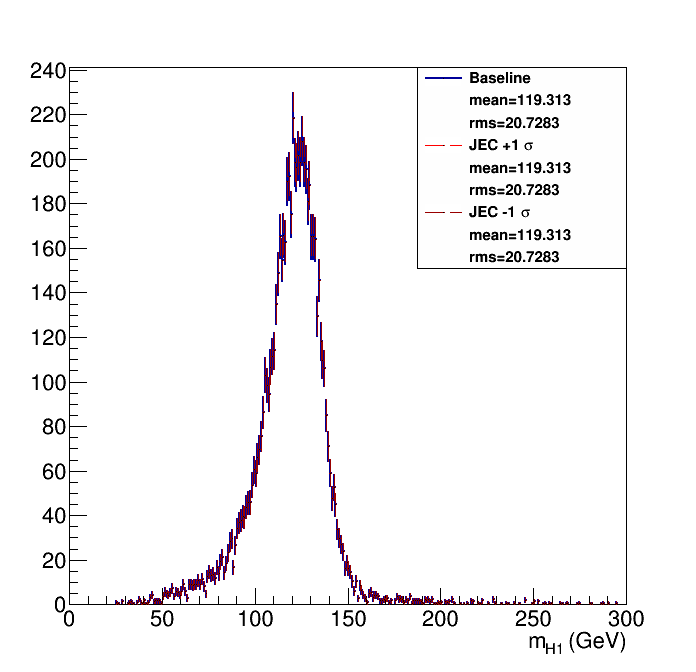
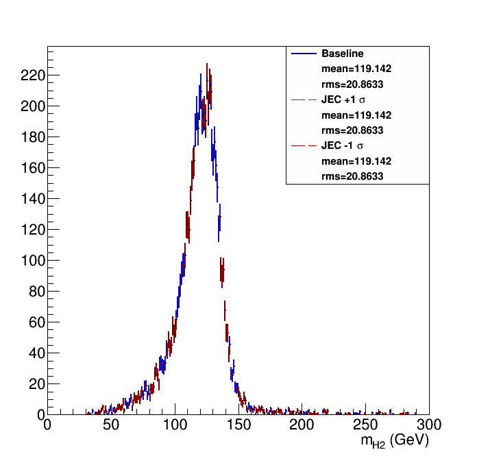
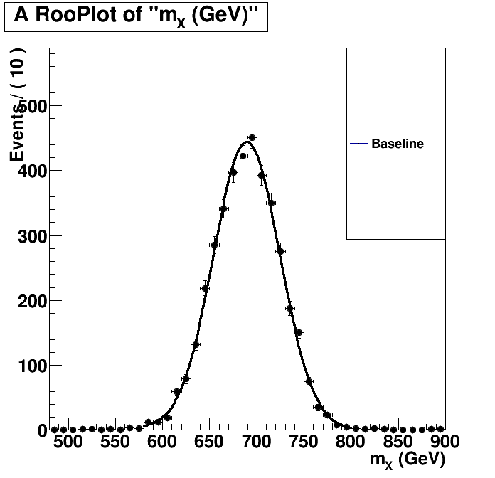
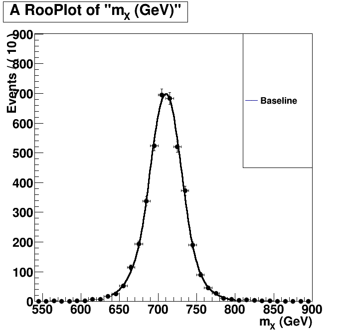

| Higgs 1 mass  | Higgs 2 mass  |
Without Kin-Fit. Fitted to an Exp-Gauss-Exp function.=== Baseline plot === |
With Kin-Fit. Fitted to an Exp-Gauss-Exp function.=== Baseline plot === norm = 874.152 sg_p0 = 710.151 0.435215 sg_p1 = 21.1844 0.46492 sg_p2 = 1.41686 0.0879853 sg_p3 = 1.29799 0.0652462 btag lnN 1.09224 - |